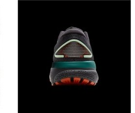

DAILY｜定番デイリー
安く、長く、ぶれない。
性能点3.99はデイリー67足中12位で、後継のゴースト 18（4.11）との差は小さい。実測266gで後継より24g軽く、¥2,200安い。1kmあたり約25円は、比較した4足で最も安い。
毎日のジョグを1足でこなしたい人。かかとから着地する人。価格を抑えたい人。
柔らかいクッションがほしい人。低いドロップが好きな人。

かかとの幅94.7mmにヒール剛性5で、安定性は4.5点。摩耗深度0.7mmで推定寿命は約700km、耐久性も4.5点ある。
衝撃吸収は133SAで67足中30位。フォーム硬度41.5ACは、計測のある60足で硬いほうから10番目である。
曲げ剛性9.6Nは、67足で7番目に柔らかい。
5点満点。計測値を当サイトのルールで点数にしたもの。
安定性4.5、耐久性4.5、クッション3.5、グリップ3.5、スピード3.0、軽さ2.5。目立つ弱点がない代わりに、突出した項目も少ない。
軽いほど短い。
摩耗深度から推定した寿命で計算。短いほど安い。
| ゴースト 16 | ゴースト 18 | グライドライド マックス | 1080 v14 | |
|---|---|---|---|---|
| 価格 | ¥17,600 | ¥19,800 | ¥17,600 | ¥19,800 |
| 実測重量 | 266g | 290g | 281g | 285g |
| 衝撃吸収（SA） | 133 | 135 | 143 | 142 |
| エネルギーリターン前足部 | 62.7% | 58.1% | 51.8% | 59.4% |
| 摩擦係数 | 0.48 | 0.54 | 0.78 | 0.52 |
| 摩耗深度 | 0.7mm | 0.8mm | 0.9mm | 0.6mm |
| 性能点 | 3.99 | 4.11 | 4.00 | 3.84 |
| コスパ点 | 4.5 | 4.5 | 4.5 | 4 |
ゴースト 18は安定性と性能点で上回るが、¥2,200高く、24g重い。グライドライド マックスは同じ¥17,600で、クッションとグリップが上回る。1080 v14は衝撃吸収142SAでクッションは上だが、¥2,200高い。
ドロップは12mmと高い。摩擦係数は0.48で、グリップは3.5。通気性は4ある。
後継のゴースト 18が出ているモデルなので、買う前に在庫と自分のサイズがあるかを確かめたい。価格は当サイトの掲載値で、店によって変わる。
1足目のジョグ用として候補になる。週15kmなら約11か月で700kmに届き、1kmあたり約25円で維持費も安い。
安定性と耐久性が高く、価格は抑えめ。クッションの柔らかさを求めなければ、毎日のジョグを任せられる靴である。
※本記事は海外ラボ（RunRepeat）の計測データとメーカー公表値、当サイトの計算をもとにした分析です。計測はUS9（約27cm）です。1kmあたりの費用は摩耗深度から推定した寿命での概算です。価格は当サイトの掲載値で、変更されている場合があります。